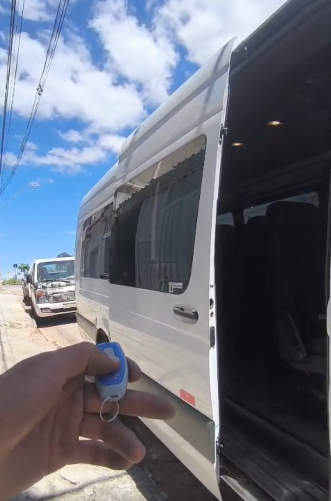

Sobre Nosso Trabalho

O Dr. Portas é especializada em soluções para portas automáticas de vans, oferecendo instalação, manutenção e reparos com qualidade, segurança e eficiência. Trabalhamos com portas automáticas de correia, motores eletrônicos e sistemas automatizados, garantindo praticidade e conforto para motoristas e passageiros. Nossa equipe atua com atendimento profissional e serviços especializados, realizando manutenção preventiva e corretiva para manter o funcionamento perfeito das portas automáticas. Na Dr. Portas, buscamos sempre oferecer tecnologia, confiança e agilidade em cada serviço realizado.